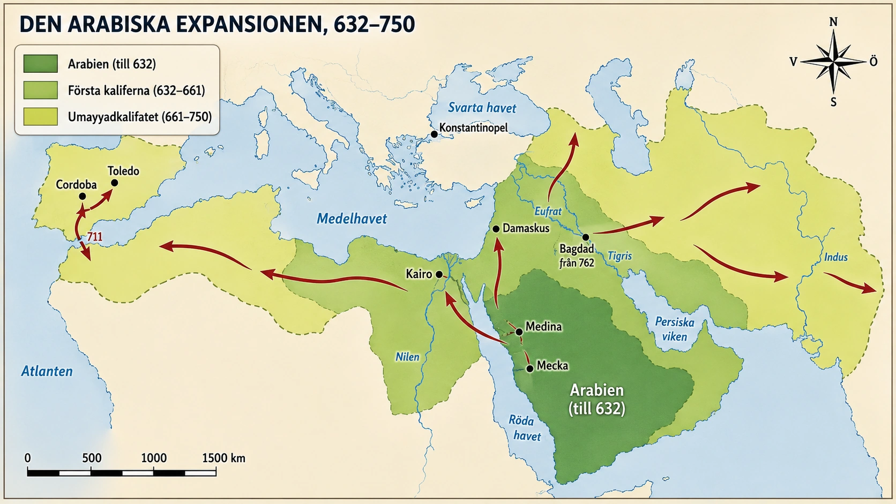
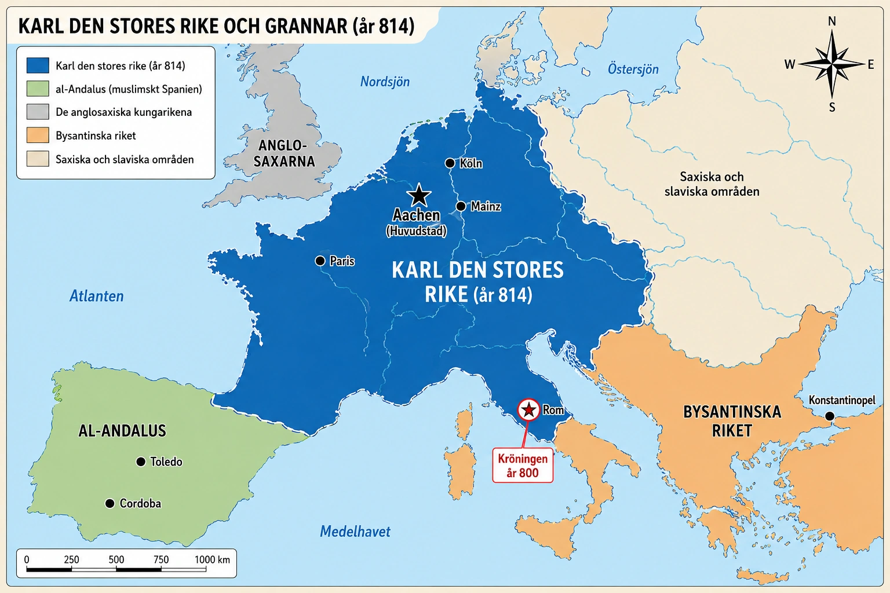

— två krafter som formade medeltidens Europa —
Under medeltidens första århundraden växte en helt ny stormakt fram — den muslimska världen. På bara hundra år expanderade den från Arabiska halvön till Spanien. Och i muslimska städer som Bagdad och Cordoba bevarades antikens kunskap.
Profeten Muhammed grundade religionen islam på Arabiska halvön. Innan dess hade halvön varit splittrad i många olika stammar och klaner. Under Muhammed enades de under en gemensam religion. När han dog år 632 var islam en stark religiös och politisk kraft.
Efter Muhammeds död ledde kaliferna — "ställföreträdarna" — det muslimska samfundet. Och de erövrade enorma områden på mycket kort tid. På bara hundra år sträckte sig det muslimska riket från Spanien i väst till Indien i öst. Det var ett av historiens snabbaste riksbyggen.
Två stora riken besegrades: Bysantinska riket tappade Egypten och stora delar av Nordafrika, och Perserriket föll helt. Båda var trötta och svaga efter långa krig mot varandra.
År 711 gick muslimska styrkor över sundet mellan Nordafrika och Europa. De besegrade snabbt visigoterna som styrde Spanien. Den största delen av halvön blev muslimsk och kallades al-Andalus. Spanien skulle förbli till stor del muslimskt i flera hundra år.

En mycket viktig sak hände i den muslimska världen. I städer som Bagdad och Cordoba översatte arabiska forskare gamla grekiska och romerska böcker till arabiska. De studerade matematik, medicin, filosofi, astronomi och vetenskap.
På så sätt bevarade araberna mycket av antikens kunskap under en tid då Västeuropa hade tappat bort den. Senare skulle denna kunskap flöda tillbaka till Västeuropa — främst via Spanien. Det är därför vi idag har arabiska ord som algebra, algoritm och kemi.
I nästa del ska vi se hur den muslimska expansionen mötte ett starkt motstånd i Västeuropa — och hur det stärkte frankerna och kyrkan.
Under medeltidens första århundraden hände två saker som tillsammans skulle forma Europas medeltid på djupet. I söder och öster växte en helt ny stormakt fram med otrolig hastighet — den muslimska världen, som på bara hundra år expanderade från Arabiska halvön ända till Spanien och Indien. I detta avsnitt ska vi se hur denna kraft växte fram — och varför den muslimska världen kom att bli en av medeltidens viktigaste bärare av antikens kunskap.
När profeten Muhammed dog år 632 hade islam redan blivit en stark religiös och politisk kraft på Arabiska halvön. Under Muhammeds liv hade många arabiska stammar enats under den nya religionen. Det var en betydelsefull förändring, eftersom Arabiska halvön tidigare hade varit splittrad mellan olika stammar, klaner och lokala ledare.
Efter Muhammeds död uppstod frågan: vem skulle leda det muslimska samfundet? Den nye ledaren kallades kalif. Ordet betyder ungefär "ställföreträdare" eller "efterträdare". Kalifen var både politisk och religiös ledare, men han sågs inte som en ny profet. Muhammed betraktades som den siste profeten.
På bara hundra år växte det muslimska riket enormt. Expansionen gick från Arabien västerut över Nordafrika och in i Spanien, och österut mot Persien och Centralasien. Det blev ett av världshistoriens snabbaste riksbyggen.
Varför gick det så snabbt? Flera saker samverkade. De arabiska styrkorna var skickliga och rörliga. Många soldater var vana vid hårda livsvillkor och kunde röra sig snabbt över stora avstånd, även genom ökenområden.
De två stora rikena i området var redan försvagade. Bysantinska riket och Perserriket hade krigat länge mot varandra. Båda hade lagt enorma resurser på krig och var trötta när de muslimska arméerna anföll.
Vissa grupper välkomnade nya härskare. I delar av Bysantinska riket fanns kristna grupper som hade behandlats illa på grund av religiösa konflikter. För dem kunde muslimskt styre upplevas som mindre förtryckande än det gamla.
Österut erövrade de muslimska arméerna stora delar av Perserriket. Perserriket hade länge varit en stormakt, men det föll snabbt under 600-talet. Områden som dagens Irak och Iran blev delar av det muslimska väldet.
Detta blev mycket viktigt för framtiden. Persien hade en lång tradition av administration, vetenskap, handel och kultur. När dessa områden blev en del av den islamiska världen blandades arabiska, persiska, grekiska och andra traditioner. Det skulle bli en av de viktigaste grunderna för den vetenskapliga och kulturella utvecklingen i den muslimska världen.
Västerut tog muslimska arméer kontroll över Egypten och sedan stora delar av Nordafrika. Egypten var särskilt viktigt — landet hade rika jordbruksområden kring Nilen och låg strategiskt mellan Afrika, Asien och Medelhavet.
Från Nordafrika fortsatte expansionen mot västra Medelhavet. År 711 gick muslimska styrkor över sundet mellan Afrika och Europa till den iberiska halvön — alltså dagens Spanien och Portugal. Området styrdes då av visigoterna, ett germanskt folk som tagit kontroll där efter Västroms fall. De muslimska styrkorna besegrade visigoterna snabbt, och stora delar av Spanien hamnade under muslimsk kontroll.
Området kom att kallas al-Andalus. Där utvecklades med tiden en högtstående kultur med städer, handel, jordbruk, vetenskap, filosofi, medicin, arkitektur och bibliotek. Cordoba, al-Andalus huvudstad, blev under en period en av Europas största och mest avancerade städer.
Här kommer en av medeltidens viktigaste poänger. Du har läst i tidigare avsnitt om hur Västromerska riket föll och hur Västeuropa under tidig medeltid blev fattigare, mer splittrat och i många avseenden mindre lärt. Mycket av antikens kunskap — grekisk matematik, filosofi, medicin, astronomi — riskerade att gå förlorad i väst.
Men i den muslimska världen hände motsatsen. När arabiska arméer erövrade gamla bysantinska och persiska områden mötte de en enorm rikedom av antik och persisk kunskap. Istället för att förstöra denna kunskap valde de muslimska härskarna att översätta, samla och utveckla den.
I Bagdad, kalifatets huvudstad, byggdes ett berömt centrum för översättning och forskning — ofta kallat Visdomens hus. Där översattes verk av Aristoteles, Platon, Euklides, Galenos och många andra antika författare till arabiska. Persiska, indiska och kinesiska texter översattes också. Resultatet blev att den muslimska världen samlade mer kunskap än någon annan kultur i världen vid den tiden.
På samma sätt blev al-Andalus i Spanien ett centrum för kunskap. Kalifatet i Cordoba hade vid sin höjdpunkt ett bibliotek med hundratusentals böcker — i en tid då stora kloster i Västeuropa kanske hade några hundra. Muslimska forskare som al-Khwarizmi utvecklade algebra (ett arabiskt ord). De förbättrade matematik, medicin och kartografi. Den kunskap araberna byggde upp skulle senare flöda tillbaka till Västeuropa — och bli en av grunderna för renässansen.
Det är en av medeltidens märkligaste paradoxer. När Västeuropa under tidig medeltid riskerade att tappa bort antikens lärdom, var det den muslimska världen som blev dess viktigaste bevarare.
I nästa del ska vi se hur den muslimska expansionen mötte ett starkt motstånd i Västeuropa — och hur det stärkte frankerna och kyrkan.
Under medeltidens första århundraden hände två saker som tillsammans skulle forma Europas medeltid på djupet. I söder och öster växte en helt ny stormakt fram med otrolig hastighet — den muslimska världen, som på bara hundra år expanderade från Arabiska halvön ända till Spanien och Indien. År 732 möttes denna nya kraft frankerna vid Poitiers, och decennierna efter slaget skulle frankerkungen Karl den store skapa ett nytt kejsardöme i väst — det första sedan Romarrikets fall. I detta avsnitt ska vi se hur dessa två krafter växte fram, varför de möttes vid Poitiers, och varför den muslimska världen kom att bli en av medeltidens viktigaste bärare av antikens kunskap.
Den arabiska halvön före Muhammeds tid var en värld av nomadstammar, handelsstäder och religiös mångfald. Beduinerna i öknarna levde i klaner som ofta krigade mot varandra. Handelsstäderna — som Mekka, där Muhammed föddes — var rika men splittrade. Religiöst fanns det polyteister (som dyrkade många gudar), judar, kristna och andra grupper.
Muhammed började predika under tidigt 600-tal och samlade gradvis anhängare omkring den nya monoteistiska religionen islam. När han dog år 632 hade han enat de flesta arabiska stammar under den nya tron. Det är värt att stanna upp vid hur ovanligt detta var. På bara två decennier hade en region som varit splittrad i hundratals år fått en gemensam religion, ett gemensamt politiskt projekt och en gemensam identitet.
Efter Muhammeds död uppstod frågan: vem skulle leda det muslimska samfundet? Den nye ledaren kallades kalif — "ställföreträdare" eller "efterträdare". Kalifen var både politisk och religiös ledare, men inte profet. Muhammed betraktades som den siste profeten, och hans uppenbarelser hade samlats i den heliga skriften Koranen.
Det som följde är ett av historiens mest dramatiska skeenden. På bara hundra år växte det muslimska riket till ett av världshistoriens största imperium — från Atlanten i väst till floden Indus i öst.
Hur var det möjligt? Flera saker samverkade. Religiös enhet och motivation: för första gången var arabiska stammar inte splittrade. De krigade under en gemensam fana, med en stark känsla av att deras sak var rättfärdig. Militär skicklighet: arabiska arméer var rörliga, vana vid svåra livsvillkor och skickliga ryttare. De kunde förflytta sig snabbt över ökenområden där tunga arméer fastnade. Två försvagade stormakter att möta: de två giganterna i området — Bysantinska riket och Perserriket — hade krigat mot varandra i decennier och var båda utmattade. När de muslimska arméerna kom var båda rikena militärt och ekonomiskt nedkörda.
Dessutom utnyttjades lokala spänningar. I många erövrade områden fanns det grupper som var missnöjda med sina tidigare härskare — kristna minoriteter som hade förföljts av Bysans, lokala stormän som inte gillade persiska centralskatter. Vissa välkomnade muslimskt styre eftersom det innebar lägre skatter och religiös tolerans (om man var "bokens folk" — jude eller kristen — kunde man behålla sin religion mot en särskild skatt). Erövrade städer som inte gjorde motstånd fick ofta behålla sina egna sätt att leva.
Österut blev huvudprestation erövringen av Perserriket. På bara två decennier krossade arabiska arméer en av de äldsta civilisationerna på jorden. Persisk kultur försvann inte — den anpassade sig, översattes till arabiska, blandades med arabiskt tänkande. Men politiskt var Perserriket borta.
Bysantinska riket överlevde — men förlorade enorma områden. Egypten, Syrien, Palestina, hela Nordafrika togs över på några decennier. Bysans krympte till det som i dag är ungefär Turkiet och delar av Balkan. Konstantinopel överlevde tack vare sina enorma murar, men riket var aldrig samma sak igen.
Från Nordafrika fortsatte expansionen mot Spanien. År 711 gick muslimska styrkor över Gibraltar — namnet på sundet kommer faktiskt från den arabiske generalen Tariq (på arabiska Jabal Tariq, "Tariqs berg"). Inom några år hade de besegrat visigoterna och tagit kontroll över större delen av halvön.
Området kallades al-Andalus — ett namn vars ursprung är omdiskuterat, kanske från "vandalerna" (de hade kontrollerat området tidigare) eller från ett gotiskt ord. Cordoba blev huvudstad. Under sin höjdpunkt var Cordoba en av världens största städer — med befolkning på flera hundra tusen människor, ljusbelysta gator, offentliga bad, ett bibliotek med över 400 000 böcker, sjukhus och universitet. I en tid då Paris och London var små leriga städer var Cordoba en världsmetropol.
Och nu kommer den verkligt avgörande delen av denna historia — den del som ofta tappas bort i västeuropeisk berättelse om medeltiden.
Du har läst om hur Västrom föll och hur Västeuropa under tidig medeltid blev fattigare, mer splittrat och i mångt och mycket mindre lärt. Antikens lärdom — grekisk filosofi, matematik, medicin, astronomi — riskerade att gå förlorad. I många västeuropeiska kloster fortsatte munkar att kopiera vissa antika texter, men mycket av den grekiska lärdomen försvann eller blev otillgänglig.
I den muslimska världen hände motsatsen. När arabiska arméer erövrade gamla grekiska, romerska och persiska områden mötte de en överväldigande rikedom av kunskap. De kunde ha förstört den. De kunde ha ignorerat den. Istället valde de att samla, översätta och utveckla den.
I Bagdad inrättade kalifen ett berömt centrum för översättning och forskning — Bayt al-Hikma, Visdomens hus. Där samlades forskare, översättare och tänkare från hela den islamiska världen. Verk av Aristoteles, Platon, Euklides, Arkimedes, Ptolemaios, Galenos, Hippokrates översattes till arabiska. Tillsammans med dem översattes persisk litteratur, indisk matematik och kinesiska tekniska skrifter.
Den arabiska civilisationen var i en utomordentlig position. Den kunde tala med folk på tre kontinenter, hade tillgång till tre stora kunskapstraditioner (grekisk, persisk, indisk) och hade en stark statsapparat som värdesatte och betalade för översättning och forskning. Och resultatet? Den muslimska världen drev fram vetenskap och lärdom på sätt som ingen annan civilisation i världen vid den tiden. al-Khwarizmi skrev "Kitab al-jabr" — boken som gav oss ordet algebra. Hans namn, latiniserat till "Algoritmi", är ursprunget till ordet algoritm. Ibn Sina (Avicenna) skrev medicinska och filosofiska verk som användes på Europas universitet i flera hundra år. Ibn al-Haytham (Alhazen) utvecklade modern optik och visade hur människans syn fungerar.
Och i al-Andalus, i städer som Cordoba, Toledo och Sevilla, blandades dessa kunskaper med arabisk, judisk och kristen lärdom. Det blev en av medeltidens mest kreativa kulturella miljöer.
Här blir berättelsen ännu mer fascinerande. Den arabiska bevarade och vidareutvecklade kunskapen flödade så småningom tillbaka till Västeuropa — främst genom två kanaler.
Genom Spanien. När kristna kungariken i norra Spanien gradvis återerövrade muslimska områden (något som kallas reconquistan, "återerövringen"), fick de tillgång till arabiska bibliotek och översättningscentra. I städer som Toledo översatte kristna och judiska lärda arabiska texter till latin. Tusentals antika verk — många av dem grekiska — kom tillbaka till Västeuropa, men nu på latin, omvägen via arabiska. Genom Sicilien. Sicilien hade också varit muslimskt under en period, och när normanderna erövrade det behöll de mycket av den arabiska lärdomen.
Detta kallas ibland renässansen på 1100-talet — en period då Västeuropa plötsligt fick tillgång till enorma mängder kunskap som tidigare varit förlorad. När universiteten i Paris, Oxford och Bologna växte fram byggde de på dessa nyöversatta arabiska verk.
Detta är en av medeltidens viktigaste insikter. Den europeiska renässansen, som vi tänker oss som en "återupptäckt av antiken", var inte en direkt återupptäckt av grekisk lärdom. Den var en återupptäckt via den arabiska världen. Utan den muslimska civilisationens århundraden av översättning, bevarande och vidareutveckling hade Europa troligen aldrig återfunnit antiken.
Att förstå medeltiden kräver alltså att man förstår detta paradoxala faktum: den civilisation som många i Västeuropa såg som sin "fiende" var samtidigt den som bevarade och förde tillbaka det antika arv som västerlandet i dag räknar som sin egen kulturella grund.
I nästa del ska vi se vad som hände när den muslimska expansionen rörde sig norrut, mot det frankiska riket — och hur frankerna och kyrkan tillsammans formade Västeuropa.
I förra avsnittet läste du om kyrkans betydelse. Frankerna — det starkaste germanska folket i Västeuropa — blev kyrkans närmaste partner. Kungen Klodvig lät döpa sig till kristendomen i slutet av 400-talet. Från det skedet växte en allians mellan frankerna och kyrkan: kyrkan gav frankerna religiöst stöd, frankerna gav kyrkan militärt beskydd.
Under 700-talet rörde sig muslimska styrkor från Spanien norrut, in i det frankiska riket. Den frankiske ledaren hette Karl Martell — namnet betyder "Karl Hammaren". År 732 möttes han och de muslimska styrkorna i ett slag nära staden Poitiers i dagens Frankrike. Frankerna vann.
Slaget bromsade den muslimska expansionen norrut i Västeuropa. Spanien förblev till stor del muslimskt i flera hundra år, men frankerriket erövrades inte.
Karl Martells sonson hette Karl den store. Han blev en av medeltidens viktigaste kungar. Han byggde ut frankerriket till att täcka stora delar av Västeuropa — Frankrike, Tyskland, norra Italien, delar av Spanien. Han stödde kyrkan, grundade skolor och försökte ena Västeuropa.
År 800 kröntes Karl den store till kejsare av påven i Rom. Det var en mycket symbolisk händelse. Det fanns nu en ny kejsare i Västeuropa — den första sedan Romarrikets fall över 300 år tidigare.

Karl den store visar hur frankerna och kyrkan tillsammans hade skapat en ny stormakt i Västeuropa. Kyrkans religiösa makt och kungens militära styrka var nu förenade i en kejsare som krönts av påven.
I förra avsnittet läste du om kyrkans betydelse för Västeuropa efter Västroms fall. Av alla germanska folk blev frankerna kyrkans närmaste partner. Det började när frankerkungen Klodvig lät döpa sig i slutet av 400-talet. Han blev katolsk kristen — alltså samma sorts kristen som påven i Rom. Det var inte självklart, eftersom många andra germanska kungar var arianer (en annan kristen riktning som kyrkan i Rom inte accepterade).
Från Klodvigs dop växte en allians fram mellan frankerna och kyrkan: frankerna gav kyrkan militärt beskydd — i ett oroligt, splittrat Europa hade kyrkan mark, rikedomar och kloster som behövde försvaras. Och kyrkan gav frankerna religiös legitimitet — om kyrkan stödde en kung kunde människor uppfatta hans makt som godkänd av Gud.
Den här typen av allians blev en av grundpelarna i medeltidens Västeuropa. Kungamakten och kyrkan kom att samarbeta, men också ibland konkurrera om makten.
Under 700-talet styrdes frankerriket i praktiken av en mäktig ledare vid namn Karl Martell. Han var inte kung från början, men han hade den verkliga makten som rikets främste militäre och politiske ledare. Hans namn betyder "Karl Hammaren" — ett namn som visar att han senare blev ihågkommen som en kraftfull krigsledare.
Vid samma tid rörde sig muslimska styrkor norrut. De hade redan tagit Spanien (al-Andalus) och fortsatte över Pyrenéerna — bergskedjan mellan Spanien och Frankrike — in i det frankiska riket. Frankerna hade en yttre fiende som måste bemötas.
År 732 möttes frankiska styrkor och muslimska styrkor i ett slag nära staden Poitiers i dagens Frankrike. Slaget kallas också slaget vid Tours efter en närbelägen stad.
Frankerna hade en stark armé som stred till fots i tät formation. De muslimska styrkorna var kända för sitt kavalleri — alltså snabba ryttare. Karl Martells soldater lyckades stå emot anfallen och vinna slaget. Den muslimske ledaren stupade, och den muslimska armén drog sig tillbaka söderut.
Efter detta fortsatte muslimska makter att kontrollera stora delar av Spanien i flera hundra år. Men den muslimska militära expansionen norrut in i Frankerriket bromsades.
Slaget blev viktigt av flera skäl. Frankernas militära styrka bekräftades — de visade sig vara den starkaste militära makten i Västeuropa. Frankernas roll som kyrkans beskyddare stärktes — eftersom de muslimska styrkorna kom från ett islamiskt rike kunde konflikten beskrivas som att de kristna frankerna hade försvarat kristendomen i Västeuropa. Karl Martells familj steg i makt — hans son Pippin den lille blev senare kung över frankerna. Och Pippins son skulle bli en av historiens mest berömda härskare: Karl den store.
Karl Martells sonson Karl den store regerade under sent 700-tal och tidigt 800-tal. Under hans tid blev frankerriket en av Europas mest mäktiga makter sedan Romarriket. Han utvidgade riket till att täcka det mesta av Västeuropa — dagens Frankrike, Tyskland, Schweiz, Österrike, Nederländerna, Belgien, norra Italien och delar av Spanien.
Karl den store hade en vision om ett enat kristet Västeuropa. Han stödde kyrkan kraftigt. Han grundade skolor vid sitt hov där lärda människor från hela Europa möttes. Han uppmuntrade kopiering av antika och kristna texter. Han försökte få ordning på lagar, mått och mynt. Den blomstring av kunskap och bildning som hände vid hans hov kallas karolingiska renässansen.
Men kristendomens spridning under honom hade också en mörkare sida. Karl den store förde långa krig mot saxarna, ett germanskt folk i norra Tyskland som ännu inte var kristet. Saxarna tvingades till slut att acceptera kristendomen och frankiskt styre. Många som vägrade dödades. Det visar att kristnandet under medeltiden inte alltid var fredligt — det kunde också vara brutalt.
Det stora ögonblicket kom juldagen år 800. Karl den store var i Rom. Påven Leo III placerade en krona på hans huvud och förklarade honom till romersk kejsare.
Det var en händelse av enorm symbolisk betydelse. För första gången sedan Västroms fall fanns det en kejsare i Västeuropa. Och denne kejsare var en germansk kung som krönts av påven. Frankerna och kyrkan hade tillsammans skapat ett nytt kristet kejsardöme.
Detta nya kejsardöme stod inte i samma tradition som det gamla Romarriket — Bysans i öster betraktade det med stor skepsis (det fanns ju redan en romersk kejsare i Konstantinopel, hävdade de). Men i Västeuropa blev kröningen 800 en grundbult: kungen var krönt av påven, godkänd av Gud, försvarare av kristenheten. Detta blev grunden för hur Västeuropeiska härskare framställde sig själva i tusen år framåt.
Den arabiska expansionen och Karl den stores tid hänger ihop på ett djupt sätt. Den muslimska expansionen från söder skapade ett yttre hot mot Västeuropa. Detta hot bidrog till att förena frankerna och kyrkan ännu starkare i en allians. Slaget vid Poitiers blev en bekräftelse på denna allians. Och Karl den stores kröning år 800 blev krönet på utvecklingen — Västeuropas första kristna kejsardöme sedan Roms fall.
Men det är värt att hålla i minnet vad du läste i förra delen: samtidigt som frankerna stoppade den muslimska expansionen militärt, blev den muslimska civilisationen den viktigaste bevararen av antikens kunskap. Karl den stores Västeuropa var starkt men relativt fattigt på lärdom. al-Andalus och Bagdad var rika på lärdom men längre från Västeuropa. Det skulle dröja flera hundra år innan den arabiska kunskapen flödade tillbaka norrut och bidrog till Västeuropas senare uppblomstring.
För att förstå varför slaget vid Poitiers fick den betydelse det fick, behöver vi förstå frankernas roll i Västeuropas tidiga medeltid. Av alla germanska folk som bildade kungariken på romersk mark blev frankerna det dominerande. Deras rike skulle leva vidare och utvecklas till det som senare blev både Frankrike och Tyskland — Västeuropas politiska kärna under tusen år.
Vad var det som gjorde frankerna så viktiga? Tre saker hängde ihop. Geografin: frankerriket växte fram i området kring nedre Rhen och Gallien — alltså i Västeuropas geografiska hjärta. Detta var det rikaste och mest befolkningsrika området efter Roms fall. Den katolska kristendomen: när frankerkungen Klodvig lät döpa sig valde han den katolska — alltså påvelydiga — kristendomen. Många andra germanska kungar var arianer, en kristen riktning som kyrkan i Rom såg som kättersk. Klodvigs val betydde att frankerna direkt knöts till påven och Rom. Det var en strategiskt klok investering. Visigoter, vandaler och langobarder — som var arianer — fick aldrig samma stöd från kyrkan. Alliansen med kyrkan: Klodvigs dop var början på vad som skulle bli en allians mellan frankerkungarna och påvedömet som höll i flera hundra år och formade hela det medeltida Europa.
Begreppet allians är värt att stanna upp vid. En allians är inte vänskap. Det är ett samarbete där båda parter har något att vinna och något att förlora. Frankernas och kyrkans allians fungerade just så.
Kyrkans behov: efter Västroms fall var kyrkan rik på prestige, mark och kunskap — men militärt sårbar. Påven i Rom kunde när som helst hotas av lokala stormän, langobarder från norra Italien, eller andra fiender. Kyrkan behövde en kunglig beskyddare. Frankernas behov: frankerkungarna var militärt starka men hade ständigt behov av legitimitet — alltså av att människor accepterade deras makt som rättmätig. I en värld där läskunnighet var sällsynt och Gud var verklig, var påvens välsignelse en av de starkaste legitimitetskällor som fanns.
När båda parter hade något att vinna kunde alliansen leva vidare i generation efter generation, även när enskilda kungar och påvar inte gillade varandra. Det är så institutionella allianser fungerar — och det är därför de kan vara så stabila.
Berättelsen om slaget vid Poitiers år 732 har omdiskuterats av historiker. Den traditionella bilden — att frankerna räddade Europa från muslimsk erövring — är delvis korrekt men delvis överdriven.
Vad vi vet säkert: En muslimsk armé från al-Andalus rörde sig norrut. De plundrade och vann flera mindre framgångar. De besegrades vid Poitiers/Tours av en frankisk armé under Karl Martell. Den muslimske befälhavaren stupade. Det blev inga fler stora muslimska framstötar norr om Pyrenéerna efter detta.
Vad är mer omdiskuterat: Hur stor armén var. Hur avgörande slaget verkligen var. Om de muslimska anfallarna ens hade som mål att erövra hela Europa — eller om det var ett storskaligt plundringståg som råkade möta motstånd.
Det är värt att förstå att sentida historieskrivning har förstorat slagets betydelse. På 1700-talet såg engelska historiker som Edward Gibbon Poitiers som en av världshistoriens mest betydelsefulla händelser — "om muslimerna hade vunnit hade Oxford lärt ut Koranen". Det är en dramatisk bild, men den är troligen överdriven. Den muslimska expansionen hade redan börjat bromsas av andra faktorer (interna konflikter, långa försörjningslinjer, problemen att administrera så enorma områden).
Men oavsett om slaget var "Europas räddning" eller inte, blev det viktigt av andra skäl: Det stärkte Karl Martell och hans familj enormt. Det gav frankerna en bild av sig själva som kristendomens försvarare. Det banade väg för det som skulle komma. Det är som med många "vändpunkter" i historien — det var inte det enskilda slaget som var avgörande, utan vad det möjliggjorde.
Efter Karl Martells död tog hans son Pippin den lille (eller Pippin den korte) över. Och Pippin gjorde något oerhört: han avsatte den siste merovingiske skuggkungen och lät sig själv krönas till frankerkung — med påvens godkännande.
Detta var kupprevolution legitimerad genom kyrkan. Pippin behövde påvens godkännande för att den nya dynastin (karolingerna) skulle accepteras som rättmätiga härskare. Påven gav det villigt — i utbyte mot att Pippin skulle skydda kyrkan mot langobarderna i norra Italien.
Pippin levde upp till uppgörelsen. Han marscherade till Italien, besegrade langobarderna och gav påven kontroll över ett område mitt i Italien — det som senare blev Kyrkostaten, en politisk enhet styrd direkt av påven som skulle existera ända till sent 1800-tal. Detta var en konkret manifestation av frankisk-kyrklig allians: militär hjälp i utbyte mot legitimitet.
Pippin den lille dog när hans son Karl var ung vuxen. Karl tog över och regerade i nästan fem decennier. Han skulle bli en av historiens mest betydelsefulla härskare och bli kallad Karl den store (Karolus Magnus, Charlemagne).
Under Karl den stores tid blev frankerriket den dominerande makten i Västeuropa. Han utvidgade gränserna kraftigt — österut mot Saxen och Bayern, söderut mot norra Italien, sydväst mot delar av Spanien. Hans rike täckte vid hans död större delen av Västeuropa.
Men Karl den store var inte bara erövrare. Han var en av medeltidens första kungar att försöka systematisera lärdom och förvaltning. Han grundade en hov-skola i Aachen där lärda från hela Europa möttes — bland dem den anglosaxiske munken Alkuin, som blev hans närmaste rådgivare i lärdomsfrågor. Han uppmuntrade kopiering av antika och kristna texter — många av de antika verk vi har idag finns bevarade just tack vare den karolingiska renässansen under Karl den stores tid. Han försökte standardisera mått, mynt och lagar i sitt rike. Han utvecklade en ny, tydligare skrift — karolingisk minuskel — som blev grunden för det vi idag känner igen som "vanliga" små bokstäver.
Samtidigt har vi den mörkare sidan: trettio år av krig mot saxarna, där tusentals tvångsdöptes eller dödades. Karl den store är inte en enkel hjälte. Han är en medeltida härskare med medeltida metoder. Men hans roll som kristen samlare av Västeuropa är obestridd.
Och så det stora ögonblicket. Juldagen år 800, i Sankt Peters basilika i Rom. Karl den store är där för att vara med på julmässan. Påven Leo III närmar sig honom — och placerar en krona på hans huvud, förklarar honom till romersk kejsare, och hela församlingen ropar tre gånger: "Karl Augustus, krönt av Gud, stor och fredsbringande romersk kejsare, liv och seger!"
Det är en av medeltidens mest berömda händelser. Och dess betydelse var enorm. För Karl den store betydde det att han nu inte bara var frankisk kung utan kejsare — den högsta titel som fanns. Han hade åtminstone teoretiskt samma värdighet som kejsaren i Konstantinopel. För påven betydde det att han hade återskapat det romerska kejsardömet i väst. Och eftersom det var påven som krönte kejsaren, etablerade kröningen en mycket viktig princip: kejsaren får sin makt från kyrkan, inte tvärtom. Det skulle bli en av medeltidens mest sprängstoffsladdade idéer — och leda till konflikten mellan påvar och kejsare som du kommer läsa om i senare avsnitt.
För Bysans var det en katastrof. Den bysantinska kejsaren betraktade sig själv som Romarrikets enda rättmätiga arvtagare. Att en germansk barbarkung i väst kröntes som "romersk kejsare" av en biskop var närmast en provokation. Det fanns en tid då Bysans ifrågasatte hela legitimiteten i Karl den stores titel — och spänningen mellan väst och öst växte ytterligare. När du läste om schismen 1054 i förra avsnittet — det stora kyrkobrottet — fanns kröningen 800 som en av de tidiga skälen till den växande misstron.
Karl den stores rike överlevde inte länge efter hans död. Hans sonsöner delade upp riket genom Verdun-fördraget på 800-talet. Det är i grova drag från denna delning som Frankrike och Tyskland växer fram som separata politiska enheter.
Men idén om ett kristet romerskt kejsardöme i väst försvann inte. Det överlevde i olika former. Det skulle senare bli Tysk-romerska riket, som existerade i tusen år. Och kröningstraditionen — att kejsare och kungar krontes av kyrkans män i en helig handling — kom att forma Europas styrelseskick i tusen år.
På så sätt blev Karl den store, och slaget vid Poitiers innan honom, mycket mer än vad de var i sin egen tid. De blev myten om kristna västeuropas födelse. Och även om mycket av den myten är överdriven, har den haft enorm betydelse för hur Europa ser på sin egen historia ända till idag.
Laddar flipcards …
Laddar frågor ...